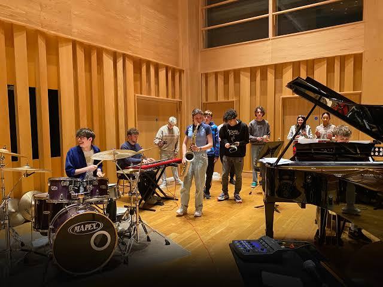
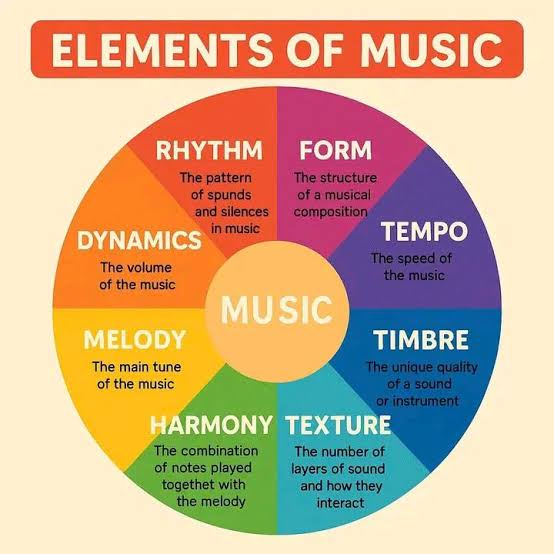
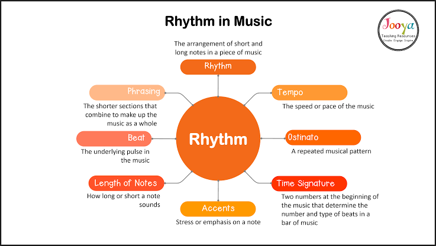
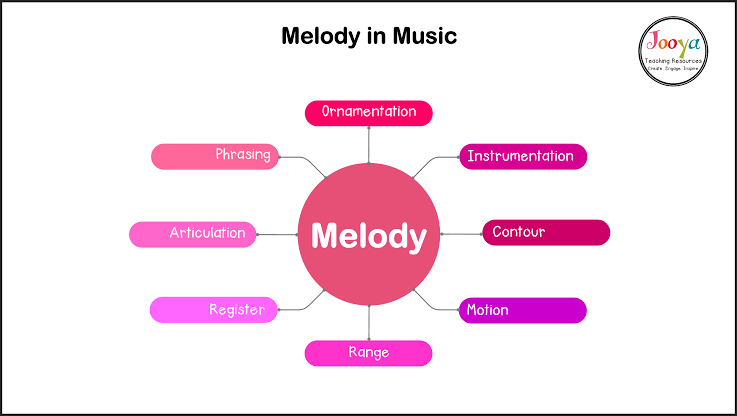
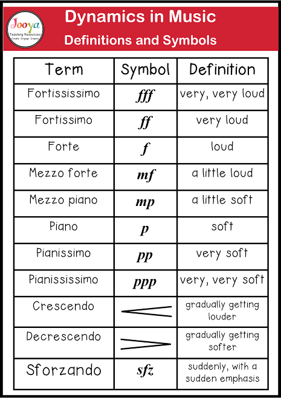
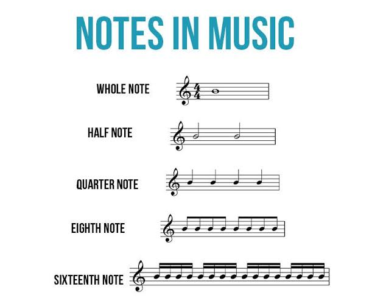
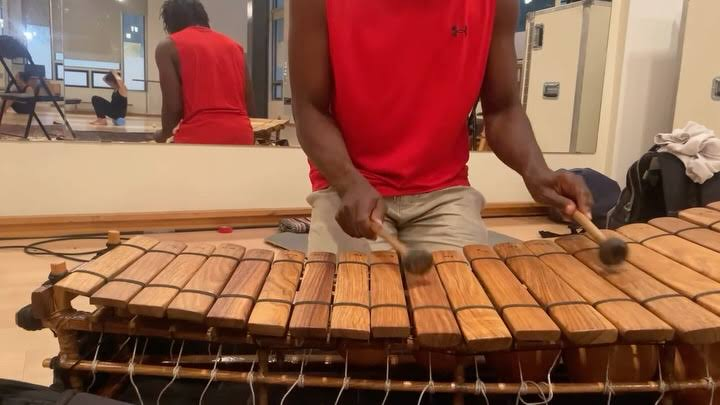

Music develops creativity, discipline, cultural awareness, emotional expression, and an appreciation for patterns, rhythm, and performance.
Music is the art of organizing sound in time to create meaning, emotion, and beauty. It is one of the oldest and most universal forms of human expression. Music can be used for worship, celebration, communication, entertainment, and reflection. In every culture, music plays an important role in identity, tradition, and social life.
When students study music, they learn not only how to perform but also how music works structurally. They explore sound, rhythm, melody, harmony, form, and expression. Music also encourages discipline, coordination, teamwork, and confidence, making it valuable both academically and personally.
Music turns organized sound into feeling, memory, and meaning for both performer and listener.
The elements of music are the basic parts that make a musical composition. These include rhythm, melody, harmony, timbre, texture, form, and dynamics. Each element contributes to the overall character of a piece. Understanding these elements helps students analyze, perform, and appreciate music more deeply.

Students learn how melody gives a song its recognizable tune, harmony adds depth, and rhythm gives movement and energy. Dynamics control loudness and softness, while tempo determines speed. Texture and form organize how musical ideas unfold across time.
The elements of music are the building blocks from which all songs and performance pieces are created.
Rhythm is the pattern of sounds and silences in music. Meter is the grouping of beats into regular patterns such as duple, triple, or quadruple time. These patterns give music its pulse and movement. Rhythm is what makes people tap their feet, clap their hands, or dance.

Students learn to count beats, identify accents, and understand syncopation, which is a rhythm that shifts emphasis to unexpected beats. Rhythm is powerful because it ties music to body movement, dance, and social expression. In many cultures, rhythm carries important ceremonial and communal meaning.
Rhythm is the heartbeat of music, making movement and timing feel natural and exciting.
Melody is a sequence of notes that forms the main tune of a musical piece. Harmony occurs when notes are combined at the same time to support and enrich the melody. A melody can be simple or complex, but it usually carries the identity of a song. Harmony adds color, tension, and emotional depth.

Music uses scales and chords to build melodic and harmonic patterns. Students learn how different notes combine to create moods such as joy, sadness, tension, or calm. This helps them appreciate both simple folk tunes and intricate classical compositions.
Melody invites the ear to follow, while harmony gives the journey richness and emotional depth.
Dynamics refer to the volume of sound in music, such as loud or soft. Expression involves the emotional interpretation of music through tempo, articulation, and phrasing. A musician may play the same notes differently to create excitement, gentleness, strength, or sadness. These details shape how music affects listeners.

Students learn terms such as piano, forte, crescendo, and diminuendo. They also practice interpreting a piece according to its mood and style. These expressive choices are very important in performance, especially in choir, band, and solo work.
Dynamics and expression transform notes on paper into living emotion and character.
Music notation is the written form of music. It uses symbols such as notes, rests, clefs, staff lines, and time signatures to show pitch, rhythm, and structure. Reading music allows performers to interpret a piece accurately. It also helps students understand how composers communicate ideas across time and culture.

Students learn to identify notes on the staff, understand key signatures, and count rhythms. They also practice reading simple melodies and chord symbols. Music literacy opens the door to performance, composition, and deeper listening.
Notation is the language of music, turning sound into symbols that can be studied, shared, and performed.
Music appreciation is the study of how music is heard, understood, and valued. It involves listening carefully to different styles, cultures, and historical periods. Through appreciation, learners discover that music is not only entertainment but also a meaningful part of human history and identity.
Students compare traditional, classical, jazz, pop, and folk music. They also learn to identify the cultural and social meanings carried by certain musical styles. Appreciation helps learners become thoughtful audience members and informed cultural participants.
Appreciation teaches us to listen with attention and respect, discovering the story behind every sound.
Traditional music reflects the customs, beliefs, and histories of communities. It may involve drumming, chanting, folk songs, and local instruments. Modern music includes contemporary popular forms such as hip-hop, gospel, highlife, Afrobeat, and pop. Both traditions are valuable and often influence one another.

Students learn how music evolves as societies change. They explore how instruments, rhythms, and lyrics are adapted to new audiences while still preserving cultural roots. This section encourages respect for diversity and creativity in musical expression.
Traditional music preserves heritage, while modern music reflects change, innovation, and cultural exchange.
Performance is the act of presenting music through singing or playing an instrument. Composition is the process of creating original music by arranging melodies, rhythms, and harmonies. Both activities require imagination, discipline, and careful practice. They help learners transform musical ideas into something real and expressive.
Students may sing in choir, play instruments, improvise, or write short pieces. Composition teaches structure, repetition, contrast, and originality. Performance builds confidence and teamwork, especially in school ensembles and cultural events.
Performance shares music with an audience, while composition gives voice to new musical ideas.